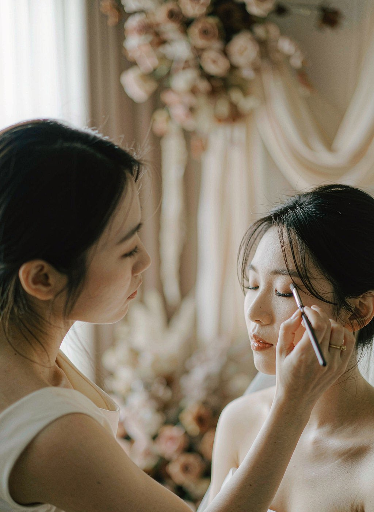

YUÉ ATELIER · ADMIN LOGIN · REDESIGN SKETCH
后台登录页重设计草图 —— 去拱形 · 收留白
现版的问题：拱形是「窄高构图」，图只占舞台中央一竖条，左右两侧全部空掉；面板又被大圆角咬掉一块，版面密度进一步降低。
下面三个方向全部 去掉拱形、改直角矩形，用「图铺满」或「排版铺满」替代「图居中」，留白只出现在刻意设计的位置。
诊断 · 拱形两个副作用：① 上下完整、左右镂空 → 舞台约 55% 面积是空底色；② 拱 + 面板大圆角两个异形互相抢，
视线在两者之间跳，没有落点。修法不是调拱的尺寸，而是换构图骨架。
A
满版出血 · 一整张
FULL-BLEED · 最稳的选择
实拍图整个左区铺满、四边出血，零留白；纸面板直角贴边，金线一道收缝。
图注压在图上（底部渐变压暗保证可读），竖排英文挪到右上角。信息密度高、气场稳，最像「专业工作室」的开场。
缺点：左区完全被一张图占据，没有第二视觉层次。

THE ART OF THE MOMENT
Nº 01BRIDAL · 仪式主妆
图满铺 · 四边出血
B
编辑拼贴 · 双图错层
EDITORIAL COLLAGE · 最有杂志感
左区放两张直角图错层：主图通高出血贴左，副图（面部细节）从右下压上来叠在主图边缘，金色发丝内框只给副图。
两条图注 + 编号形成「刊物目录」的秩序感。整块舞台被图和注填满，留白只留在右上角一处，且由竖排英文占位。
缺点：元素最多，小屏（<860px 折叠后）需要简化为单图。
01 — 02
THE ART OF THE MOMENT
Nº 01BRIDAL · 仪式主妆
Nº 02DETAIL · 面部细节
副图压主图 · 错层
C
居中请柬 · 排版主导
CENTERED CARD · 最克制
干脆取消左右分割：整页纸面，一列居中请柬式排版——字标 → 横幅小图（直角，宽约 392px）→ 表单。
没有大图就没有大留白，图的角色从「主角」降为「一枚插图」，横幅比例天然贴合照片裁切。
四角两行 9px 疏排英文撑住版面四至。后台自用场景下最省心，任何屏宽都不会破。
缺点：气场最小，视觉记忆点弱于 A / B。
YUÉ ATELIER
ADMIN CONSOLE
横幅小图替代大图
| 方向 | 留白处理 | 气质 | 实现成本 | 风险 |
|---|
| A 满版出血 |
图区零留白，密度最高 |
稳、专业、开场气场强 |
低 —— 现有代码改 .arch 为铺满即可 |
单图，视觉层次单一 |
| B 编辑拼贴 |
图 + 注填满，仅右上刻意留一处 |
杂志感、最有「作品集」味 |
中 —— 多一张图与一套错层定位 |
小屏折叠需简化为单图 |
| C 居中请柬 |
无分割，留白全部对称可控 |
克制、安静、请柬感 |
低 —— 结构最简单 |
气场弱，记忆点少 |
待拍板
① 选哪个方向（我的推荐：
A 为基线，若想要更多「作品集味」则
B；C 仅在前两者都不满意时考虑）；
② A / B 中图注文案沿用「Nº 01 BRIDAL · 仪式主妆」还是换成别的场次；
③ B 方案的副图用「面部细节」还是「头饰造型」（`closeup-face` / `closeup-head` 两张都有现成素材）。